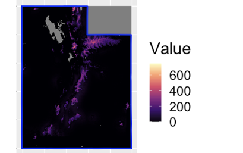

Logan Schneider
Using data to answer questions.
Orem, Utah · Open to remote or relocation
Education
M.S. Statistics · Utah State University 2020 – 2022
Thesis in spatial statistics. Read about my master's thesis →
B.S. Mathematics and Statistics · Utah State University 2015 – 2019
Experience
Biostatistician I · Myriad Genetics Jul 2022 – Oct 2025
Data analysis in cancer research.
- Analyzed cancer and genetic testing data with survival, logistic, and mixed-effects models, from sample size planning through the final report.
- Co-authored a 2025 study in Obstetrics and Gynecology and worked on the manuscripts for other studies.
- Verified other statisticians' analyses by reproducing their results and checking model assumptions, so findings were manuscript ready.
Research questions I worked on
- Are the test scores of patients with cancer different from those of patients without cancer, and is the difference measurable?
- How many patients does a study need for 80% power with a Cox regression model?
Patients who met testing guidelines and completed genetic testing
Projects
Each one starts with a question.

Personal project · 2026
Pickleball analytics
Models that detect the ball, the players, and the court in match video. The court is located within one foot on 97% of checks.
- Python
- Computer vision
- Model evaluation

M.S. thesis · 2022
Water stored in Utah's snowpack
Snow station measurements blended with the national grid, published as an R package.
- R
- Spatial statistics
- Cross-validation

Live dashboard · 2026
Utah's rivers, ranked against history
Every Utah streamgage ranked live against up to 131 years of its own records.
- JavaScript
- Public APIs
- Data quality

Data pipeline and dashboard · 2026
A year of Citi Bike
45.4 million trips, with a written rule for every row removed.
- Python
- SQL
- Data pipelines

Runs in your browser
Stats Lab
How many patients does a study need? Power and sample size for Cox regression, logistic regression, and AUC.
- Power and sample size
- Survival analysis

Runs in your browser
Pickleball Playground
Every serve and return from a pro match I labeled by hand. See where the ball lands.
- Sports statistics
- Data visualization
In progress: a public health dashboard on live CDC and openFDA data.
Skills, and where I used them
Each mark links to the project that shows the skill.
Working knowledge, used less often: SAS, PyTorch, Tableau. Languages: English, Russian.
My Approach
How I work through a question, on every project.
Clear Question
I start by putting the question in plain English.
Explore the Data
I investigate each column, build graphics and simple summaries, and get a clear picture of what I'm working with.
Model Selection
I find the model that fits the question and the data assumptions.
Validate and Explain
I check that results hold up, then write down what I learned, what worked, and what didn't.
Next Steps
I note the new questions that came up, decide what to investigate next, and repeat the process.
Hiring a statistician or data scientist?
I am looking for biostatistics and data science roles where careful analysis and clear explanation improve real decisions. Orem, Utah, open to remote and relocation.
loganschneider93@gmail.com